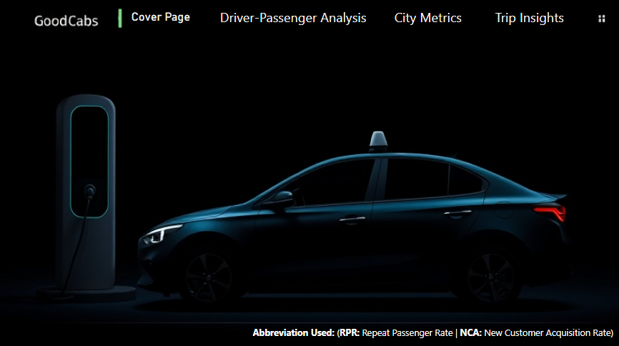
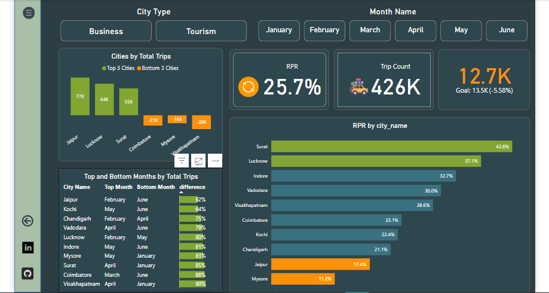
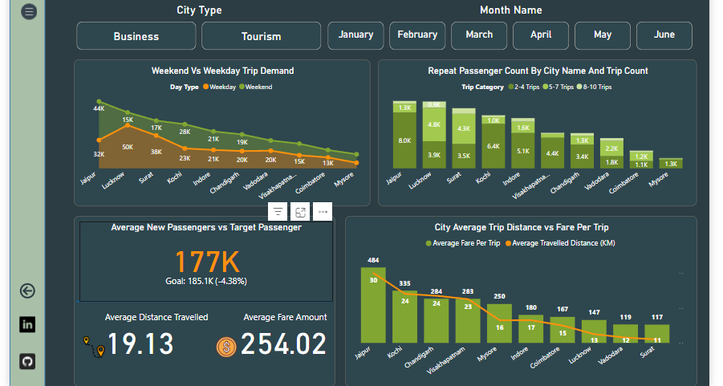
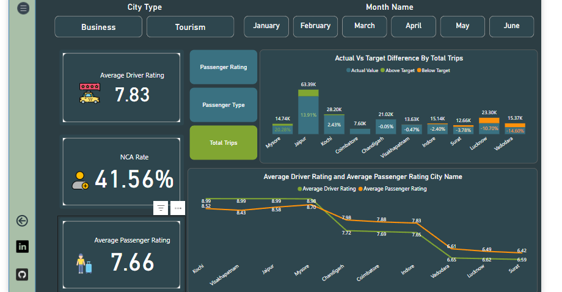

.png) Linkedin
LinkedinAbout the Project
This analysis aims to assess GoodCabs' operational performance to
support strategic goals for 2024. The focus is on evaluating key
indicators such as trip frequency, passenger feedback, customer
retention rates, and trip allocation.
Data Model: A Snowflake Schema is utilized to structure data
efficiently for better understanding and reporting.
Key Datasets:
- Trip Details (
fact_trips) - Passenger Summaries (
fact_passenger_summary) -
Repeat Trip Distribution (
dim_repeat_trip_distribution) -
Monthly Targets (
monthly_target_trips,monthly_target_new_passenger)
Skills: PowerBi, Excel, SQL
Approach And Insights
𝐑𝐞𝐩𝐨𝐫𝐭 𝐎𝐯𝐞𝐫𝐯𝐢𝐞𝐰:
- Home Page: Provides an overview of the system and navigation.
- Driver-Passenger Analysis: Displays key metrics like average driver and passenger ratings, NCA rate, and total trips for 2024, along with city-wise performance, actual vs target trip differences, and the best/worst-rated cities.
- City Metrics: Displays key metrics like trip count, RPR (Repeat Passenger Rate), and total trips for 2024, along with city-wise trip performance, top/bottom months by trip difference, and the best/worst cities by RPR.
- Trip Insights: The third page of the dashboard analyzes trip demand, passenger trends, and fare metrics across cities, with filters and insights.
𝐈𝐧𝐬𝐢𝐠𝐡𝐭𝐬:
- Cities such as Jaipur, Lucknow, and Surat show the highest trip volumes, while Visakhapatnam, Coimbatore, and Mysore rank lowest.
- Tourism-centric cities, like Jaipur and Kochi, report substantially higher fares (108.9%) and longer travel distances (77.2%) than business hubs such as Surat and Indore.
- Passenger ratings are highest in Jaipur and Kochi (8.99), whereas Surat and Vadodara report the lowest satisfaction levels.
- Demand spikes in April, February, and May, while June and January witness the lowest trip counts.
- Most locations experience increased weekday activity; however, Jaipur and Surat see higher demand on weekends.
- Surat leads in repeat passenger rates (42.6%), while Mysore lags behind (11.2%).
- Business-focused cities have difficulty meeting performance goals, whereas tourism-oriented cities consistently surpass expectations.
Conclusion
Reccomandation:
- Enhancing Service Quality: Implementing driver training programs and offering performance-based incentives to elevate service standards and foster passenger loyalty.
- Tailoring Pricing Strategies: Providing diverse transport choices such as bikes and rickshaws in Tier 2 cities to enhance affordability and attract middle-income customers.
- Aligning pricing models with seasonal fluctuations and local demand patterns to maximize occupancy.
- Customer Retention Strategies: Introducing tailored loyalty programs and service enhancements such as air-conditioning, seamless booking processes, and in-vehicle conveniences.
- Forming strategic alliances with local businesses, hotels, and event organizers to boost ride demand.
- Launching targeted promotions during off-peak seasons to retain customers and maintain steady trip distribution.